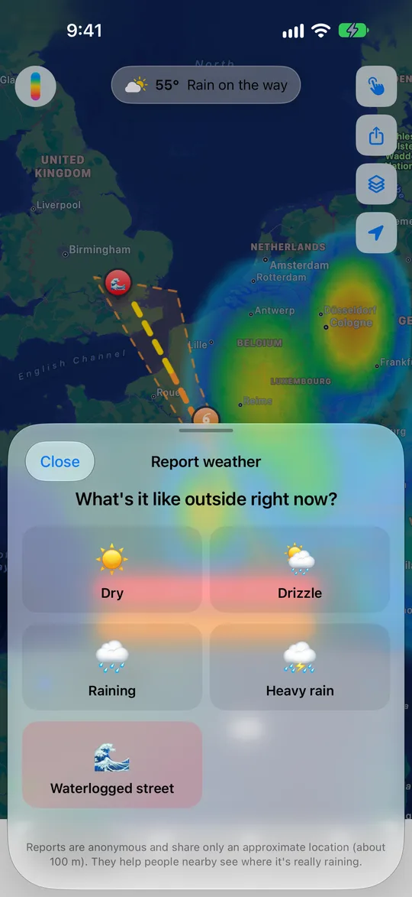
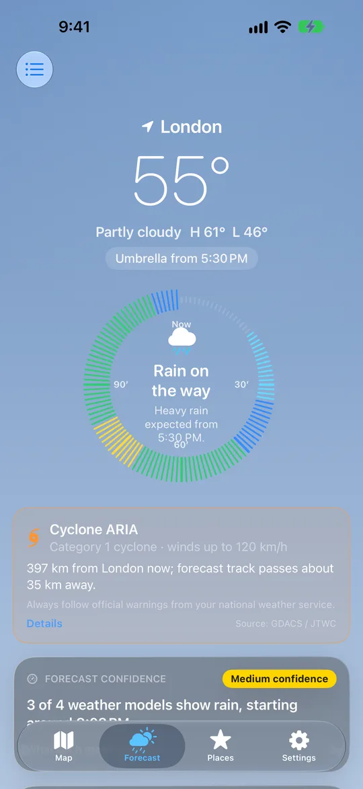
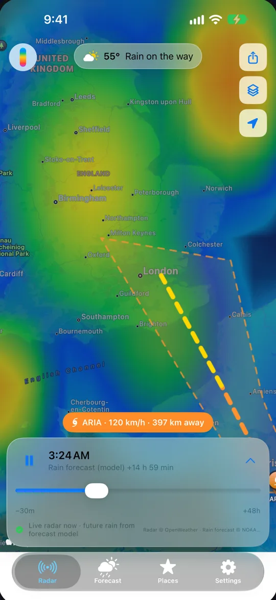
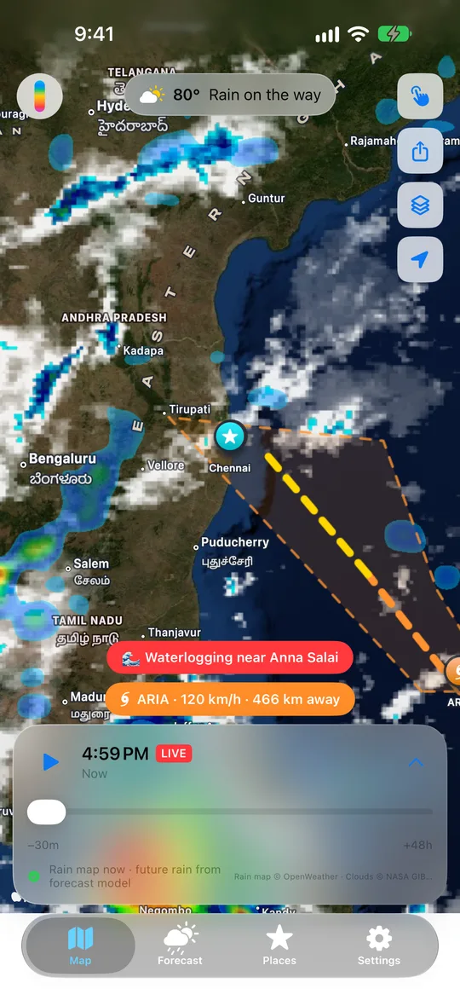
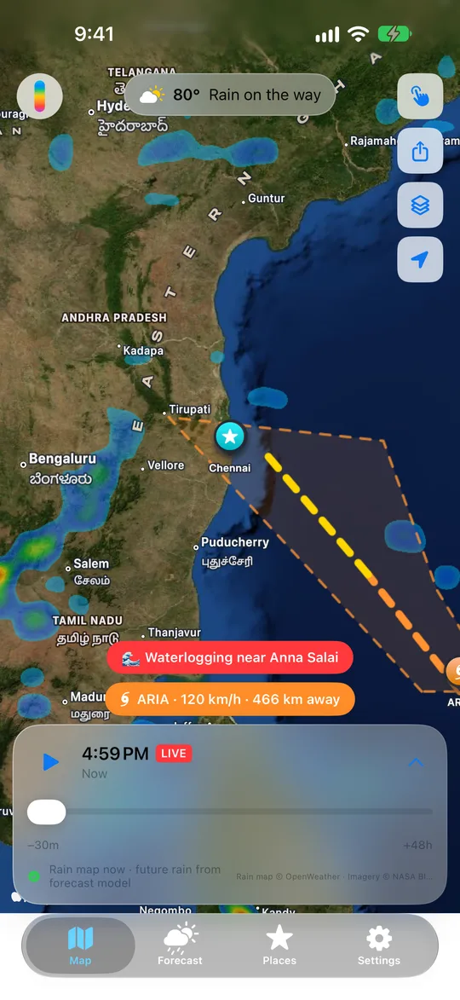
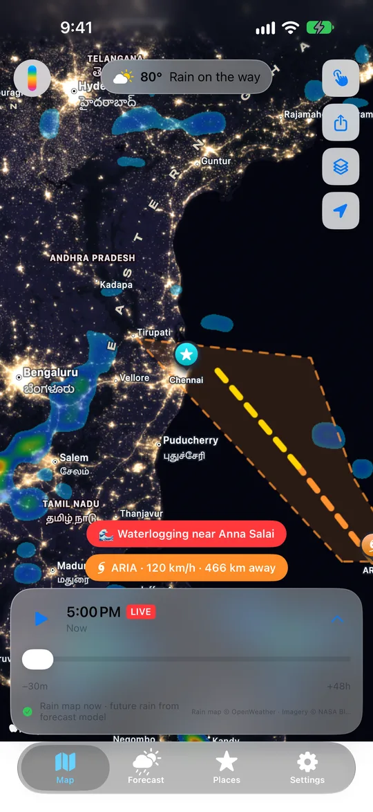
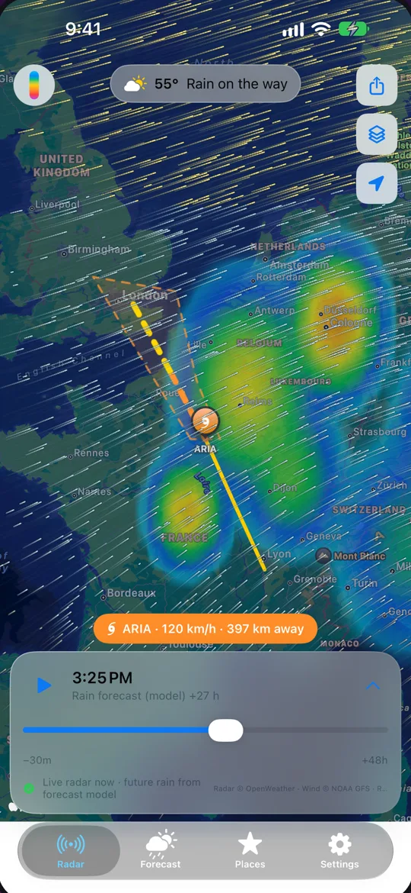
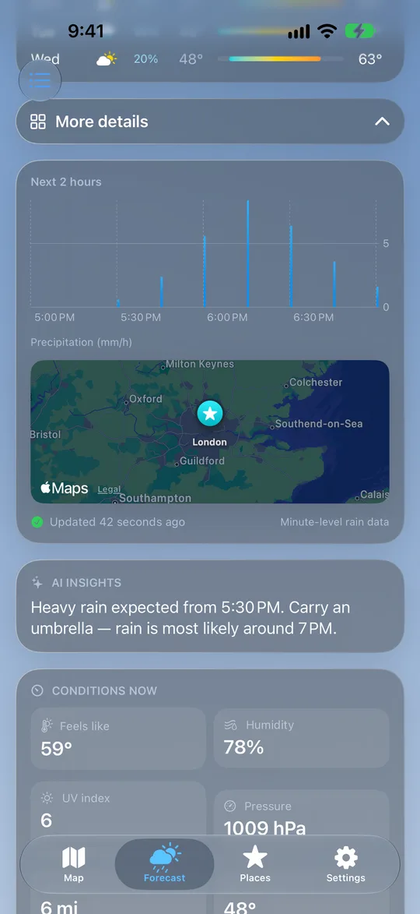
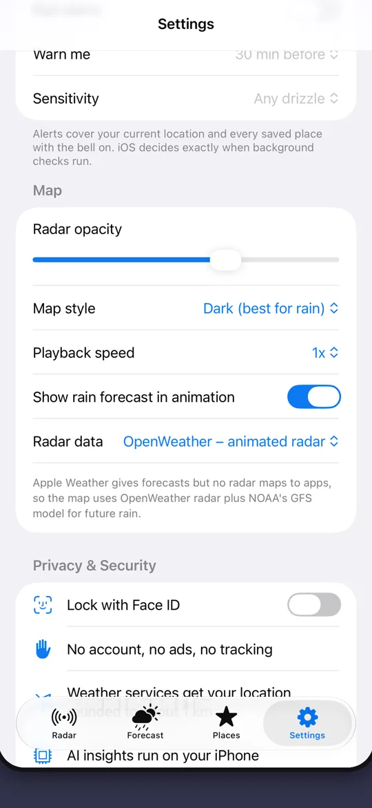

A live rain map, a minute-by-minute 2-hour rain forecast, official government warnings and rain reports from people near you, in one fast, private app.
Free for iPhone (iOS 17 or later), with optional Essential and Pro plans.
Rain in 18 minHeavy for 25 min, then easing
Official warningHeavy rainIndia Meteorological Department, for Chennai district, until 9 pm
The Rain Clock, with example forecasts. Twelve o'clock is now; each mark is one minute, coloured by how hard it rains.
Drizzle
Light
Moderate
Heavy
Downpour
The rain app that shows its own track record.
Most weather apps never tell you whether they were right, or how sure they are. RainPulse tells you both, and checks itself against what people on the street actually see.
Forecast vs reality
RainPulse saves every 3-hour rain forecast before it happens, then checks what actually fell using rain reports from people nearby. When nobody reported, it uses recorded rainfall and labels it as a model estimate.
82%
of rain forecasts were right here in the last 7 days
✓
✓
✓
✗
✓
✓
✓
✓
✗
✓
✓
Forecast confidence
RainPulse asks four independent global weather models the same question: will it rain in the next 12 hours, and when? Then it says High, Medium or Low confidence, in plain words. Tap to see what each model says.
Medium confidence3 of 4 weather models show rain, but disagree on timing: between 3 pm and 9 pm.
ECMWF Europe
GFS United States
ICON Germany
GEM Canada
No rain
Noon3 pm6 pm9 pmMidnight
Official warnings, free for everyone
In India, warnings come from the government's NDMA SACHET system, which carries IMD, CWC, INCOIS and state disaster authority alerts. The app finds your district on your phone, so your location is never sent. Elsewhere, official alerts come through Apple Weather where available.
Shown in the agency's own words, with who issued it and when it expires, always kept apart from RainPulse's own forecasts. Severe warnings send a notification. Safety information is never behind a paywall.
Rain Truth
One tap to report what it's like outside: Dry, Drizzle, Rain, Heavy rain or Flooded street. See how many people near you reported rain in the last 15 minutes, 30 minutes or hour.
Anonymous, approximate location only, no account. Satellites and models estimate. Your neighbours know.
Flooded-street alerts
When people nearby report a waterlogged street, RainPulse warns others in the area. Built for monsoon cities, where the real problem isn't the rain but the flooded road on your way home.


Check the forecast against the street
Report the rain in one tap, then see the Rain Clock, the forecast's confidence and what people nearby are reporting on the same screen.
With Leave now, tell RainPulse how long your trip is, and it finds the driest window in the next two hours.
"Leave in 25 minutes for a dry 40-minute trip."

A live rain map you can trust
See current rain around you on a smooth, zoomable map. Press play for the recent past and the next hours; forecast frames are clearly labelled as a model forecast.
Adjustable opacity and a clear colour legend
Dark, Light, Hybrid, Satellite and Satellite with labels
Active cyclones worldwide, with distance from you and alerts when one comes near
Earth, as NASA sees it
Three map styles built on NASA imagery, free on every plan.

Live cloudsReal satellite cloud imagery, updated every few minutes.

EarthBlue Marble relief of land and sea.

City lightsEarth at night, from Black Marble.

Wind you can watch Pro
Global winds move across the map, powered by NOAA's GFS model, with cyclone tracks on top. Pro also adds clouds and temperature layers and 48 hours of rain map playback.

Everything else, kept simple
Forecasts
Temperature, feels like, humidity, UV, wind and air quality. Hourly and daily forecasts: 2 days free, 14 days with a plan.
Rain alerts
A notification before rain starts. Choose any drizzle, moderate rain or heavy rain only.
Saved places
Home, office, family. 3 free, 20 with a plan, each with its own alerts.
Home Screen widget
Current weather and rain for the next two hours.
Today in one line
A Lock Screen widget with an umbrella, heat or air-quality tip at a glance.
AI insights Pro
A short plain-language summary of the day's weather, generated privately on your iPhone with Apple Intelligence.

Private by design. Made for the world.
No account, no sign-up, no ads, no tracking. Rain Truth uses an approximate location only, and you can lock the app with Face ID.
Available worldwide in 11 languages: English, Spanish, Portuguese (Brazil), Hindi, Indonesian, Japanese, German, French, Arabic, Tamil and Vietnamese. Dark mode, large text and VoiceOver are supported.
Free covers what keeps you safe.
The rain map, official warnings, Rain Truth, forecast confidence and forecast vs reality are free for everyone. Yearly plans include a 14-day free trial. Prices are US prices; the App Store shows your local price, which is lower in many countries, including India.
Feature
Free$0
Essential$2.99/monthor $19.99/year
Pro$5.99/monthor $34.99/year
Live rain map
✓
✓
✓
Rain map animation
30 min back and ahead
2 h back and ahead
48 h back, 2 h ahead
Official warnings
✓
✓
✓
Rain Truth and flooded-street alerts
✓
✓
✓
Forecast confidence
✓
✓
✓
Forecast vs reality
✓
✓
✓
Cyclone tracker
✓
✓
✓
NASA map styles
✓
✓
✓
Daily forecast
2 days
14 days
14 days
2-hour rain chart
–
✓
✓
Leave now
–
✓
✓
Saved places
3
20
20
Rain alerts
Current location
20 places
20 places
Wind flow and extra map layers
–
–
✓
AI insights
–
–
✓
Honest about the data
We tell you where every number comes from. The rain map is an estimate from weather data, not live ground radar, and the app labels it that way.
Forecasts
Apple Weather, plus Open-Meteo
Rain map
OpenWeather's rain estimate, plus NOAA's GFS model for future rain
Official warnings
NDMA SACHET in India, Apple Weather elsewhere
Confidence
ECMWF, GFS, ICON and GEM models
Map imagery
NASA GIBS: Blue Marble, live satellite clouds, Black Marble
Cyclones
GDACS, from the European Commission and the United Nations
Crowd reports
RainPulse users, through Rain Truth
Questions
Is RainPulse free?
Yes. The rain map, official warnings, Rain Truth, forecast confidence and forecast vs reality are all free. Essential and Pro add longer forecasts, the 2-hour rain chart, more places, wind flow and AI insights.
Do I need an account?
No. There's no sign-up of any kind.
Is the map real radar?
No. It's a rain estimate from weather data, plus a model forecast for future rain, and RainPulse labels it that way. Rain Truth adds what people on the ground actually see.
Where do official warnings come from?
Government weather agencies only: NDMA SACHET in India, and Apple Weather's official alerts in other countries.
How does "Forecast vs reality" work?
RainPulse saves each forecast, then checks it against Rain Truth reports, or recorded rainfall when nobody reported, and shows how often it was right.
Does it work outside India?
Yes, worldwide. Official warnings and crowd reports are strongest where more people use the app.
How do I cancel a subscription?
In your iPhone's Settings, tap your name, then Subscriptions. Subscriptions renew automatically unless you cancel at least 24 hours before the end of the period.